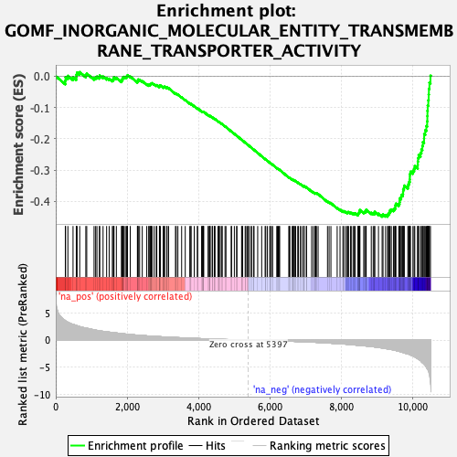
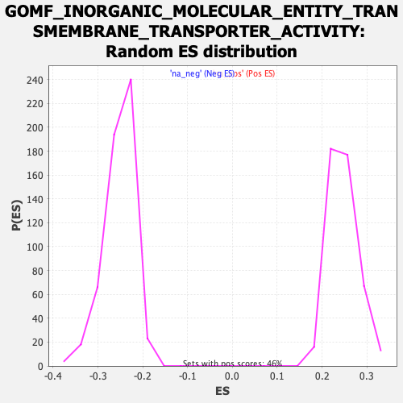

| Dataset | qlf.KOd4vsWTd4_gsea_score |
| Phenotype | NoPhenotypeAvailable |
| Upregulated in class | na_neg |
| GeneSet | GOMF_INORGANIC_MOLECULAR_ENTITY_TRANSMEMBRANE_TRANSPORTER_ACTIVITY |
| Enrichment Score (ES) | -0.44913268 |
| Normalized Enrichment Score (NES) | -1.7841966 |
| Nominal p-value | 0.0 |
| FDR q-value | 0.04633194 |
| FWER p-Value | 0.971 |

| SYMBOL | RANK IN GENE LIST | RANK METRIC SCORE | RUNNING ES | CORE ENRICHMENT | |
|---|---|---|---|---|---|
| 1 | SLC25A3 | 268 | 3.541 | -0.0145 | No |
| 2 | SLC39A4 | 275 | 3.508 | -0.0036 | No |
| 3 | SLC30A2 | 340 | 3.283 | 0.0010 | No |
| 4 | SLC5A6 | 484 | 2.866 | -0.0036 | No |
| 5 | CYC1 | 575 | 2.676 | -0.0036 | No |
| 6 | VDAC2 | 579 | 2.669 | 0.0049 | No |
| 7 | ATP7A | 598 | 2.623 | 0.0117 | No |
| 8 | SLC39A10 | 671 | 2.471 | 0.0128 | No |
| 9 | SLC9B2 | 842 | 2.204 | 0.0035 | No |
| 10 | ANXA6 | 868 | 2.174 | 0.0082 | No |
| 11 | SLC3A2 | 1073 | 1.866 | -0.0056 | No |
| 12 | VDAC1 | 1117 | 1.818 | -0.0038 | No |
| 13 | UQCRFS1 | 1154 | 1.778 | -0.0015 | No |
| 14 | CACNA1S | 1222 | 1.707 | -0.0024 | No |
| 15 | SLC25A5 | 1232 | 1.699 | 0.0023 | No |
| 16 | MMGT1 | 1325 | 1.602 | -0.0014 | No |
| 17 | VDAC3 | 1425 | 1.517 | -0.0061 | No |
| 18 | TMEM38B | 1496 | 1.457 | -0.0081 | No |
| 19 | UQCRC1 | 1585 | 1.384 | -0.0122 | No |
| 20 | MAGT1 | 1612 | 1.366 | -0.0102 | No |
| 21 | SLC6A6 | 1623 | 1.358 | -0.0067 | No |
| 22 | CALHM2 | 1631 | 1.351 | -0.0030 | No |
| 23 | CLIC4 | 1698 | 1.302 | -0.0051 | No |
| 24 | ATP1A1 | 1843 | 1.190 | -0.0153 | No |
| 25 | ATP2A2 | 1847 | 1.185 | -0.0117 | No |
| 26 | SLC25A22 | 1871 | 1.170 | -0.0101 | No |
| 27 | COX5A | 1872 | 1.170 | -0.0062 | No |
| 28 | UQCR10 | 1884 | 1.166 | -0.0035 | No |
| 29 | TMCO3 | 1912 | 1.142 | -0.0024 | No |
| 30 | ABCC1 | 1949 | 1.115 | -0.0022 | No |
| 31 | CLCC1 | 1987 | 1.090 | -0.0022 | No |
| 32 | SLC20A2 | 2001 | 1.078 | 0.0000 | No |
| 33 | TRPM7 | 2009 | 1.073 | 0.0029 | No |
| 34 | SLC31A1 | 2087 | 1.017 | -0.0013 | No |
| 35 | SLC23A2 | 2287 | 0.902 | -0.0177 | No |
| 36 | TMEM120B | 2292 | 0.900 | -0.0152 | No |
| 37 | SLC25A4 | 2303 | 0.892 | -0.0132 | No |
| 38 | MFSD5 | 2307 | 0.890 | -0.0106 | No |
| 39 | CLIC3 | 2349 | 0.873 | -0.0117 | No |
| 40 | COX5B | 2423 | 0.842 | -0.0161 | No |
| 41 | SLC25A37 | 2549 | 0.778 | -0.0257 | No |
| 42 | SLC38A1 | 2604 | 0.756 | -0.0285 | No |
| 43 | ATP6V1A | 2615 | 0.754 | -0.0270 | No |
| 44 | ORAI1 | 2641 | 0.741 | -0.0270 | No |
| 45 | ATP13A2 | 2657 | 0.737 | -0.0260 | No |
| 46 | MCU | 2668 | 0.732 | -0.0246 | No |
| 47 | TMCO1 | 2678 | 0.727 | -0.0231 | No |
| 48 | ATP6V1B2 | 2696 | 0.716 | -0.0224 | No |
| 49 | COX7B | 2755 | 0.690 | -0.0258 | No |
| 50 | ZDHHC17 | 2814 | 0.665 | -0.0293 | No |
| 51 | SEC61A1 | 2830 | 0.658 | -0.0286 | No |
| 52 | NNT | 2904 | 0.626 | -0.0336 | No |
| 53 | KCNQ5 | 2906 | 0.625 | -0.0317 | No |
| 54 | NIPA2 | 2908 | 0.625 | -0.0297 | No |
| 55 | KCNK6 | 2930 | 0.619 | -0.0297 | No |
| 56 | SLC26A10 | 3010 | 0.593 | -0.0355 | No |
| 57 | SLC38A2 | 3019 | 0.590 | -0.0343 | No |
| 58 | SLC39A7 | 3046 | 0.580 | -0.0350 | No |
| 59 | SLC1A4 | 3050 | 0.578 | -0.0334 | No |
| 60 | CUL5 | 3113 | 0.558 | -0.0376 | No |
| 61 | ATP13A3 | 3117 | 0.556 | -0.0360 | No |
| 62 | SLC9A6 | 3161 | 0.538 | -0.0385 | No |
| 63 | COX8A | 3353 | 0.473 | -0.0555 | No |
| 64 | MFSD2A | 3374 | 0.468 | -0.0559 | No |
| 65 | SURF1 | 3421 | 0.455 | -0.0589 | No |
| 66 | SLC18A2 | 3526 | 0.421 | -0.0677 | No |
| 67 | COX6A1 | 3627 | 0.389 | -0.0761 | No |
| 68 | SLC12A2 | 3754 | 0.355 | -0.0872 | No |
| 69 | COX6B1 | 3786 | 0.346 | -0.0891 | No |
| 70 | P2RX4 | 3788 | 0.346 | -0.0881 | No |
| 71 | SLC30A6 | 3879 | 0.323 | -0.0958 | No |
| 72 | MFSD3 | 3968 | 0.299 | -0.1034 | No |
| 73 | SLC15A4 | 3972 | 0.298 | -0.1027 | No |
| 74 | FXYD4 | 4085 | 0.267 | -0.1127 | No |
| 75 | ATP6V0A1 | 4104 | 0.263 | -0.1136 | No |
| 76 | COX4I1 | 4118 | 0.260 | -0.1140 | No |
| 77 | TMC4 | 4128 | 0.257 | -0.1141 | No |
| 78 | PIEZO1 | 4134 | 0.256 | -0.1137 | No |
| 79 | CACNA1D | 4145 | 0.253 | -0.1139 | No |
| 80 | SLC30A5 | 4268 | 0.223 | -0.1250 | No |
| 81 | LETM1 | 4278 | 0.221 | -0.1252 | No |
| 82 | ZDHHC13 | 4311 | 0.215 | -0.1276 | No |
| 83 | SLC25A30 | 4321 | 0.214 | -0.1277 | No |
| 84 | LRRC8D | 4322 | 0.214 | -0.1270 | No |
| 85 | ATP6V1F | 4382 | 0.198 | -0.1321 | No |
| 86 | SLC46A1 | 4387 | 0.197 | -0.1319 | No |
| 87 | UQCRH | 4439 | 0.183 | -0.1363 | No |
| 88 | SLC39A11 | 4451 | 0.179 | -0.1367 | No |
| 89 | TMEM63B | 4459 | 0.178 | -0.1368 | No |
| 90 | ATP13A1 | 4542 | 0.156 | -0.1443 | No |
| 91 | PKD1L3 | 4571 | 0.149 | -0.1466 | No |
| 92 | ATP8A1 | 4576 | 0.148 | -0.1465 | No |
| 93 | ATP2C1 | 4607 | 0.143 | -0.1489 | No |
| 94 | ANO10 | 4652 | 0.135 | -0.1528 | No |
| 95 | SLC25A10 | 4662 | 0.132 | -0.1532 | No |
| 96 | SLC9A7 | 4741 | 0.116 | -0.1604 | No |
| 97 | SLC39A3 | 4768 | 0.111 | -0.1626 | No |
| 98 | MCOLN3 | 4914 | 0.087 | -0.1764 | No |
| 99 | ATP2B4 | 4924 | 0.085 | -0.1770 | No |
| 100 | TUSC3 | 5002 | 0.069 | -0.1843 | No |
| 101 | ATP6V0B | 5068 | 0.057 | -0.1904 | No |
| 102 | SLC39A1 | 5072 | 0.057 | -0.1905 | No |
| 103 | MRS2 | 5205 | 0.034 | -0.2033 | No |
| 104 | COX7A1 | 5221 | 0.032 | -0.2046 | No |
| 105 | SLC4A7 | 5233 | 0.030 | -0.2056 | No |
| 106 | SLC39A14 | 5305 | 0.018 | -0.2125 | No |
| 107 | SLC30A4 | 5323 | 0.015 | -0.2141 | No |
| 108 | SLC25A28 | 5358 | 0.007 | -0.2174 | No |
| 109 | SLC31A2 | 5395 | 0.001 | -0.2209 | No |
| 110 | ITGAV | 5396 | 0.000 | -0.2209 | No |
| 111 | SLC36A1 | 5451 | -0.008 | -0.2261 | No |
| 112 | TCIRG1 | 5492 | -0.014 | -0.2299 | No |
| 113 | ABCC4 | 5545 | -0.022 | -0.2349 | No |
| 114 | TMEM165 | 5552 | -0.023 | -0.2354 | No |
| 115 | SLC10A3 | 5656 | -0.040 | -0.2454 | No |
| 116 | CLCN5 | 5768 | -0.060 | -0.2560 | No |
| 117 | SLC39A9 | 5864 | -0.073 | -0.2650 | No |
| 118 | PKD1 | 5882 | -0.077 | -0.2664 | No |
| 119 | SLC37A1 | 5928 | -0.085 | -0.2705 | No |
| 120 | SLC20A1 | 5993 | -0.096 | -0.2764 | No |
| 121 | CNNM4 | 6013 | -0.099 | -0.2779 | No |
| 122 | KCNMB4 | 6041 | -0.104 | -0.2802 | No |
| 123 | ATP6V1H | 6074 | -0.110 | -0.2830 | No |
| 124 | COX15 | 6190 | -0.132 | -0.2937 | No |
| 125 | LRRC8B | 6209 | -0.136 | -0.2951 | No |
| 126 | KCNMB1 | 6233 | -0.142 | -0.2968 | No |
| 127 | ATP2A1 | 6255 | -0.147 | -0.2984 | No |
| 128 | CLCN3 | 6272 | -0.149 | -0.2995 | No |
| 129 | TMEM175 | 6527 | -0.206 | -0.3235 | No |
| 130 | STIM2 | 6543 | -0.210 | -0.3243 | No |
| 131 | CHRNA2 | 6557 | -0.212 | -0.3249 | No |
| 132 | SLC39A8 | 6622 | -0.229 | -0.3304 | No |
| 133 | TTYH2 | 6646 | -0.235 | -0.3318 | No |
| 134 | CATSPER2 | 6652 | -0.236 | -0.3315 | No |
| 135 | ITPR2 | 6679 | -0.245 | -0.3333 | No |
| 136 | KCNIP2 | 6687 | -0.247 | -0.3331 | No |
| 137 | SLC15A2 | 6719 | -0.254 | -0.3353 | No |
| 138 | CLCN7 | 6778 | -0.268 | -0.3401 | No |
| 139 | SLC26A2 | 6797 | -0.273 | -0.3410 | No |
| 140 | SLC26A6 | 6848 | -0.287 | -0.3449 | No |
| 141 | CCDC51 | 6892 | -0.299 | -0.3481 | No |
| 142 | SLC30A1 | 6943 | -0.313 | -0.3519 | No |
| 143 | TMEM120A | 6950 | -0.315 | -0.3515 | No |
| 144 | XPR1 | 6956 | -0.316 | -0.3509 | No |
| 145 | CLCN2 | 7019 | -0.335 | -0.3559 | No |
| 146 | SLC39A13 | 7022 | -0.336 | -0.3550 | No |
| 147 | KCNK5 | 7167 | -0.376 | -0.3678 | No |
| 148 | ORAI3 | 7215 | -0.389 | -0.3711 | No |
| 149 | ATP6V1C1 | 7265 | -0.404 | -0.3745 | No |
| 150 | CHRNB1 | 7269 | -0.405 | -0.3735 | No |
| 151 | PSEN1 | 7286 | -0.410 | -0.3737 | No |
| 152 | SLC33A1 | 7301 | -0.418 | -0.3737 | No |
| 153 | SLC17A5 | 7348 | -0.435 | -0.3767 | No |
| 154 | SLC25A11 | 7611 | -0.531 | -0.4005 | No |
| 155 | SLC11A2 | 7656 | -0.554 | -0.4030 | No |
| 156 | SLC37A4 | 7707 | -0.574 | -0.4060 | No |
| 157 | TRPC4AP | 7882 | -0.645 | -0.4208 | No |
| 158 | ATP6V1E1 | 7962 | -0.679 | -0.4263 | No |
| 159 | GRIK5 | 8043 | -0.712 | -0.4317 | No |
| 160 | ABCC10 | 8064 | -0.720 | -0.4313 | No |
| 161 | PKD2L2 | 8118 | -0.746 | -0.4340 | No |
| 162 | COX7A2L | 8163 | -0.768 | -0.4358 | No |
| 163 | ATP6V0A2 | 8175 | -0.773 | -0.4343 | No |
| 164 | ANO8 | 8201 | -0.790 | -0.4342 | No |
| 165 | CTNS | 8255 | -0.822 | -0.4367 | No |
| 166 | SLC39A6 | 8287 | -0.834 | -0.4369 | No |
| 167 | SLC37A3 | 8339 | -0.861 | -0.4391 | No |
| 168 | KCNN4 | 8362 | -0.879 | -0.4383 | No |
| 169 | SLC8B1 | 8389 | -0.906 | -0.4379 | No |
| 170 | SLC9A8 | 8464 | -0.948 | -0.4420 | No |
| 171 | ATP6V1G3 | 8470 | -0.953 | -0.4394 | No |
| 172 | ITPR1 | 8481 | -0.956 | -0.4372 | No |
| 173 | CLIC1 | 8494 | -0.963 | -0.4352 | No |
| 174 | SLC25A14 | 8511 | -0.975 | -0.4336 | No |
| 175 | TPCN2 | 8513 | -0.976 | -0.4305 | No |
| 176 | SLC9A1 | 8519 | -0.979 | -0.4277 | No |
| 177 | ATP6V1G1 | 8626 | -1.046 | -0.4346 | No |
| 178 | ATP6V0D1 | 8652 | -1.061 | -0.4336 | No |
| 179 | TRPM6 | 8681 | -1.078 | -0.4328 | No |
| 180 | KCNA3 | 8692 | -1.083 | -0.4302 | No |
| 181 | CNNM2 | 8694 | -1.084 | -0.4268 | No |
| 182 | TRPV6 | 8837 | -1.187 | -0.4367 | No |
| 183 | CLCN6 | 8891 | -1.227 | -0.4378 | No |
| 184 | KCNB1 | 8931 | -1.258 | -0.4375 | No |
| 185 | SCN11A | 8933 | -1.259 | -0.4335 | No |
| 186 | TRPV2 | 9039 | -1.344 | -0.4393 | No |
| 187 | SLC41A1 | 9141 | -1.445 | -0.4444 | Yes |
| 188 | TRPM4 | 9166 | -1.476 | -0.4419 | Yes |
| 189 | CACNA1A | 9238 | -1.560 | -0.4437 | Yes |
| 190 | SLC12A4 | 9294 | -1.612 | -0.4438 | Yes |
| 191 | RYR3 | 9312 | -1.632 | -0.4401 | Yes |
| 192 | SLC4A2 | 9338 | -1.657 | -0.4371 | Yes |
| 193 | KCNAB2 | 9354 | -1.678 | -0.4330 | Yes |
| 194 | SLC45A4 | 9364 | -1.687 | -0.4284 | Yes |
| 195 | KCNH2 | 9399 | -1.729 | -0.4260 | Yes |
| 196 | CDK5 | 9458 | -1.811 | -0.4257 | Yes |
| 197 | ATP2A3 | 9490 | -1.858 | -0.4227 | Yes |
| 198 | TTYH3 | 9511 | -1.894 | -0.4184 | Yes |
| 199 | NIPAL3 | 9512 | -1.895 | -0.4122 | Yes |
| 200 | MCOLN1 | 9528 | -1.915 | -0.4074 | Yes |
| 201 | ATP2B1 | 9606 | -2.054 | -0.4081 | Yes |
| 202 | CYB5A | 9628 | -2.087 | -0.4033 | Yes |
| 203 | PANX1 | 9634 | -2.093 | -0.3970 | Yes |
| 204 | ANXA2 | 9637 | -2.100 | -0.3903 | Yes |
| 205 | ATP1B1 | 9674 | -2.171 | -0.3866 | Yes |
| 206 | SLC12A8 | 9681 | -2.189 | -0.3801 | Yes |
| 207 | SLC2A9 | 9720 | -2.259 | -0.3763 | Yes |
| 208 | LRRC8A | 9728 | -2.276 | -0.3696 | Yes |
| 209 | PTK2B | 9731 | -2.282 | -0.3623 | Yes |
| 210 | SLC5A3 | 9753 | -2.336 | -0.3567 | Yes |
| 211 | SLC12A9 | 9761 | -2.352 | -0.3496 | Yes |
| 212 | SLC37A2 | 9862 | -2.539 | -0.3510 | Yes |
| 213 | SLC12A6 | 9879 | -2.569 | -0.3442 | Yes |
| 214 | TPCN1 | 9900 | -2.616 | -0.3376 | Yes |
| 215 | TMC3 | 9914 | -2.659 | -0.3301 | Yes |
| 216 | ATP6V1D | 9918 | -2.671 | -0.3216 | Yes |
| 217 | CNGA1 | 9919 | -2.672 | -0.3129 | Yes |
| 218 | ABCC5 | 9935 | -2.724 | -0.3054 | Yes |
| 219 | LRRC8C | 10004 | -2.914 | -0.3025 | Yes |
| 220 | ANO6 | 10037 | -3.011 | -0.2957 | Yes |
| 221 | CACNB1 | 10056 | -3.083 | -0.2874 | Yes |
| 222 | ATP1A3 | 10138 | -3.411 | -0.2841 | Yes |
| 223 | KCNA2 | 10141 | -3.429 | -0.2730 | Yes |
| 224 | RYR1 | 10147 | -3.452 | -0.2622 | Yes |
| 225 | CACNA2D4 | 10164 | -3.490 | -0.2523 | Yes |
| 226 | ITPR3 | 10217 | -3.775 | -0.2450 | Yes |
| 227 | TMC6 | 10242 | -3.979 | -0.2343 | Yes |
| 228 | SLC4A8 | 10268 | -4.123 | -0.2232 | Yes |
| 229 | HVCN1 | 10282 | -4.206 | -0.2107 | Yes |
| 230 | TMC8 | 10316 | -4.416 | -0.1994 | Yes |
| 231 | SLC12A7 | 10319 | -4.441 | -0.1850 | Yes |
| 232 | GABRR2 | 10350 | -4.647 | -0.1727 | Yes |
| 233 | SLC14A1 | 10380 | -4.950 | -0.1593 | Yes |
| 234 | ORAI2 | 10403 | -5.209 | -0.1444 | Yes |
| 235 | AQP3 | 10408 | -5.245 | -0.1276 | Yes |
| 236 | P2RX7 | 10411 | -5.252 | -0.1105 | Yes |
| 237 | NIPAL1 | 10418 | -5.306 | -0.0937 | Yes |
| 238 | RASA3 | 10435 | -5.612 | -0.0769 | Yes |
| 239 | TMEM63A | 10445 | -5.761 | -0.0589 | Yes |
| 240 | SLC28A2 | 10451 | -5.839 | -0.0402 | Yes |
| 241 | SLC26A11 | 10466 | -6.318 | -0.0209 | Yes |
| 242 | SLC9A9 | 10495 | -7.580 | 0.0013 | Yes |
